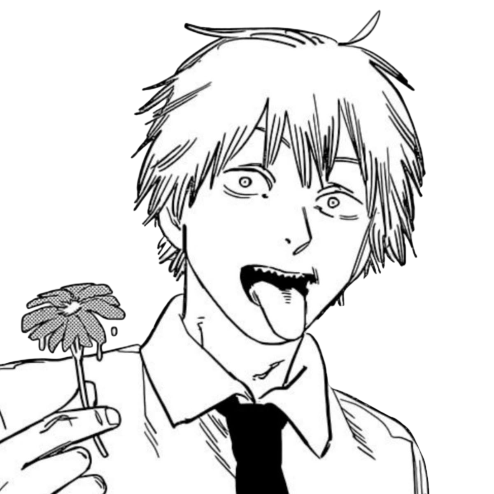
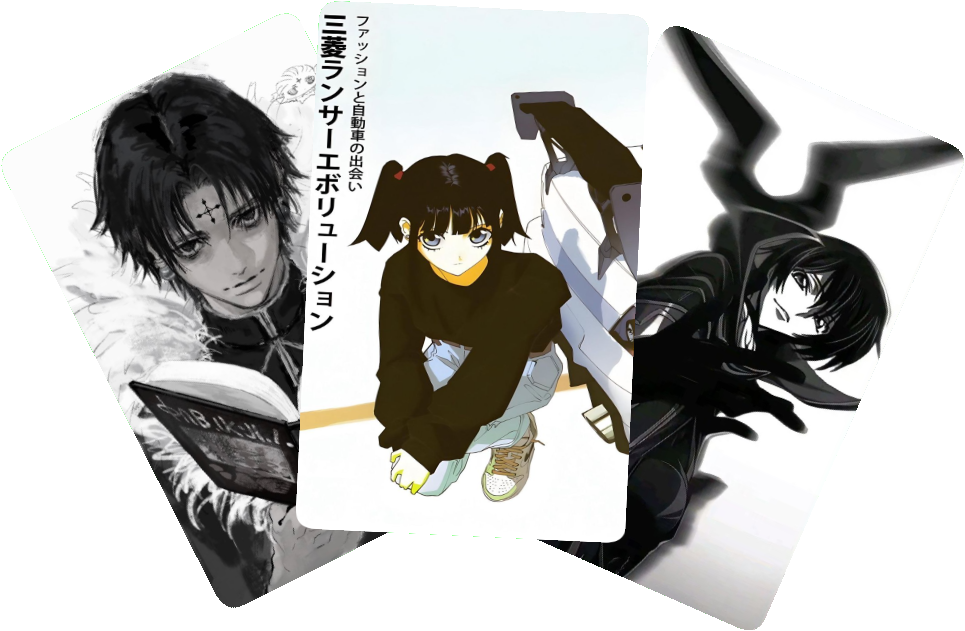
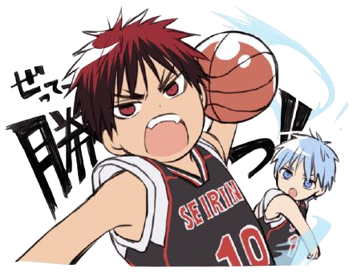
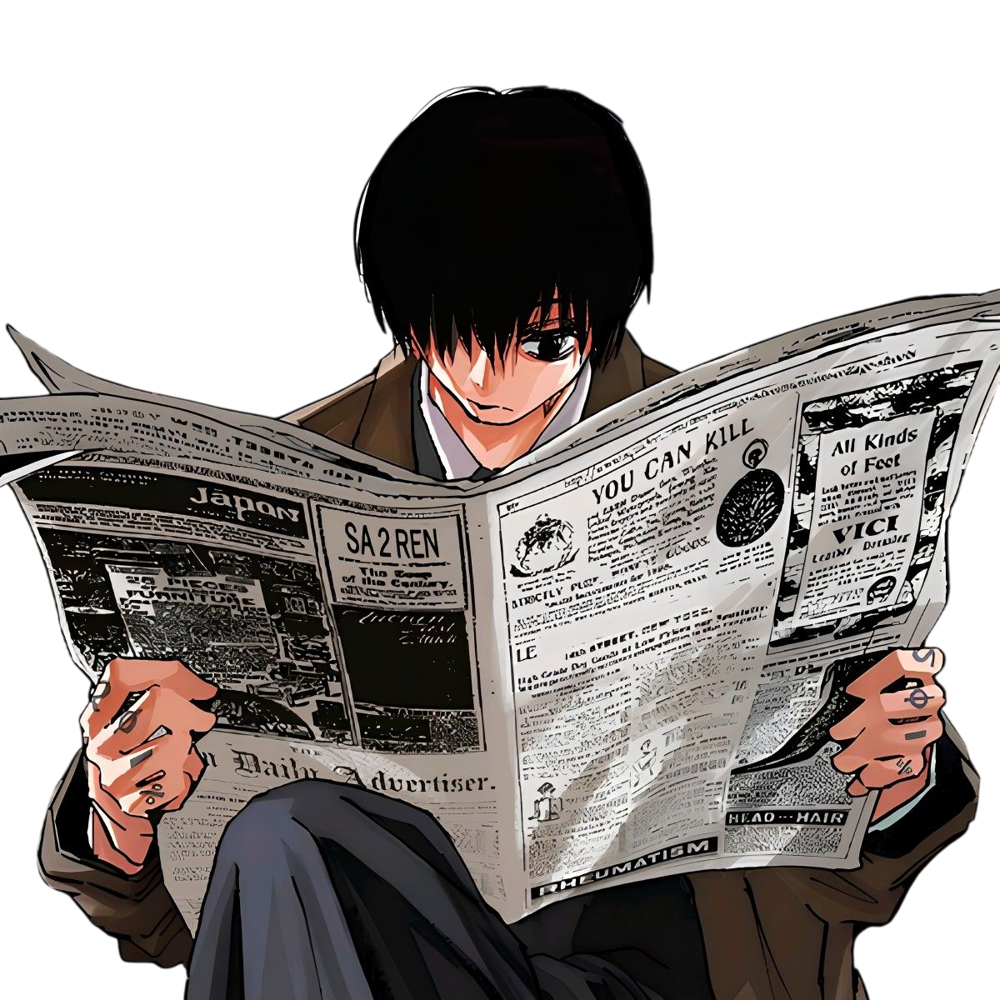

Kuronami
— это умная аниме-энциклопедия, которая знает ваши вкусы лучше, чем вы сами. Гибридная система рекомендаций сочетает коллаборативную и контентную фильтрацию, чтобы предлагать только то, что вам действительно понравится.
О проекте
Мы объединили базу из более чем 28.000 тайтлов с современными алгоритмами машинного обучения. Добавляйте аниме в избранное, оставляйте комментарии, ставьте оценки — система учится на ваших предпочтениях и находит идеи среди пользователей со схожими вкусами.


Возможности
- Гибридные рекомендации: коллаборативная + контентная фильтрация
- Избранное, комментарии
- Персональные подборки, которые обновляются каждую неделю
- Более 28.000 тайтлов с подробными описаниями и тегами
Будьте в курсе
Следите за последними новостями аниме-индустрии на Kuronami. Мы регулярно обновляем ленту с анонсами, датами выхода новых сезонов, трейлерами и эксклюзивными интервью с создателями. Подпишитесь на обновления, чтобы не пропустить самые важные события и быть в числе первых, кто узнает о громких премьерах.

Перейти на главный сайт
Откройте для себя полный функционал Kuronami — каталог, рекомендации, избранное и многое другое.
Перейти на сайт →